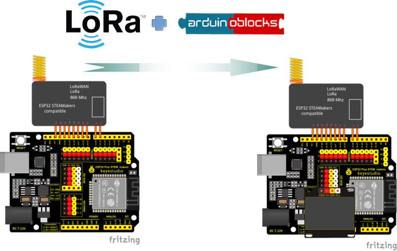
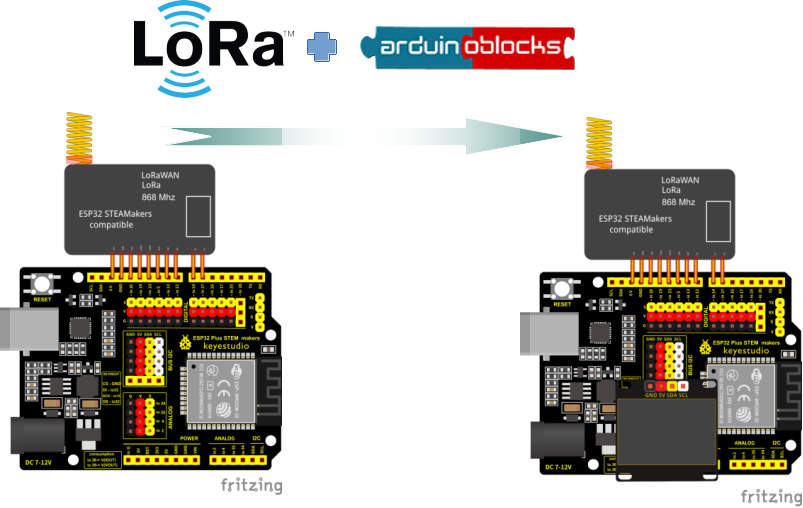

El taller trata de mostrar las posibilidades que ofrece las comunicaciones LoRa (Long Range) en nuestros dispositivos de control programado, en concreto usando las placas ESP32 STEAMakers bajo el entorno de programación Arduinoblocks.

El taller trata de mostrar las posibilidades que ofrece las comunicaciones LoRa (Long Range) en nuestros dispositivos de control programado, en concreto usando las placas ESP32 STEAMakers bajo el entorno de programación Arduinoblocks.

Obra publicada con Licencia Creative Commons Reconocimiento Compartir igual 4.0